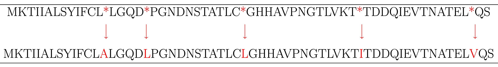
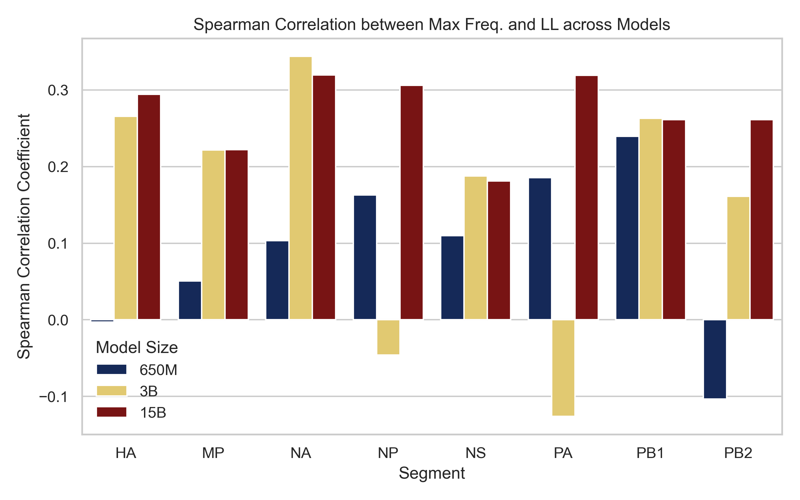

Using ESM to Predict Viable Flu Strains
Carlos Avendaño
June 11, 2025
Influenza is constantly evolving
Each year, public health organizations and researchers must develop a new vaccine.
To produce an effective vaccine, forecasting models are used to predict future viral variants.
Why use ESM for Flu Prediction?
ESM and other large language models may be effective tools to assist in predicting next season’s flu strains more accurately, by uncovering new patterns in the proteins of successful flu variants.
What is ESM?
Evolutionary Scale Modeling (ESM) is a large language model developed by Meta, which can predict protein viability, structure and function.
In this project ESM2 was used, but will be referred to as ESM.
PRETRAINING
Machine learning models are fed huge amounts of data to infer associations, for ESM the largest model was trained on 15 billion proteins from uniparc.
Three Base Pretrained Models
Three Base Pretrained Models
- 650 Million Protein Model
- 3 Billion Protein Model
- 15 Billion Protein Model
Larger Models Are More Computationally Intensive to Run
FINE-TUNING
These models can be further refined and trained on specific data.
Nextstrain Tree
60 year Nextstrain Tree for H3N2 (for flu segment HA).
Snakemake Pipeline
Translate root sequence nucleotide FASTA to amino acids
{
"nuc": "CAAACCATTTGAATGGATGTCAATCCGACT",
"PB1": "MDVNPTLLFLKVPAQNAISTTFPYTGDPPY"
}
ESM is fed protein sequences, for each flu segment, translate the root sequences from nucleotide to amino acid.
Extract FASTAs for each node in Nextstrain tree
"branch_attrs": {
"mutations": {
"nuc": [
"C1665T"
]
}
}
Nextstrain doesn't store full sequences for every node, so we use the root sequence and the mutations to reconstruct each sequence.
Calculate maximum frequency for each node in Nextstrain tree
Run sequences through ESM
Compute log likelihood for extracted sequences for each flu segment, using each base ESM model.
Extract sequences for model fine‑tuning
Option to include a cuttoff for sequences before a given time frame.
Generate fine‑tune models
Feed extracted fastas into ESM
Run sequences through ESM fine‑tuned models
Calculate log likelihood
Nextstrain Tree with Log Likelihood
Fine Tune Vs Base 650M Model for HA
Fine Tune vs Base 650M ESM Model Log Likelihood Over Time

Fine Tune vs Base 3B ESM Model Log Likelihood Over Time

ESM Log Likelihood vs Maximum Frequency Base Models Compared
Spearman Correlation Comparison Base Model Compared Grouped
ESM Log Likelihood vs Maximum Frequency Fine Tune Models Compared
Comparing Fine Tune Models to Base Models Grouped
Adjusting Fine Tuning Parameters
Adjusting Fine Tuning Parameters
Time Series Cross Validation Expected
Time Series Cross Validation Actual
Working With A larger flu tree
Working With A larger flu tree training model up to 1990
Spearman Correlation Large and Small trees, 1990 to 2005
Next Steps
- Compare the ability of ESM vs DMS to forecast evolutionarily successful influenza viruses.
- Train models on larger amounts of sequences to prevent over-training in fine tuning and run ESM on other viruses: SARS-CoV-2